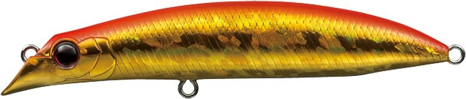
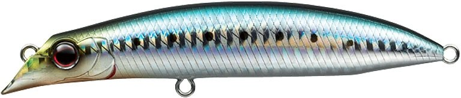
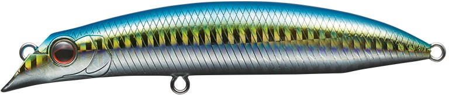
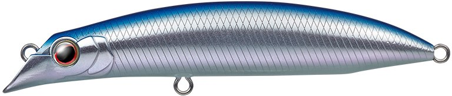

トゥルーラウンド115F
（True round 115F）
トゥルーラウンド115F（True round 115F）はEVERGREEN（エバーグリーン）のリップレスミノーです。
抜群の飛距離と安定感のある、ワールドスタンダード・リップレスミノー。主なターゲットはヒラスズキ・シーバスで、青物にも使えます。
津留崎義孝さんがプロデュース。サラシに描いた理想のトレースコースのスタート地点まで、荒天を切り裂いて飛ぶ飛行性能と、安定したタイトなウィグルアクションが特徴です。

画像出典:EVERGREEN公式HP
スペック
- メーカー
- EVERGREEN（エバーグリーン）
- タイプ
- フローティング
- 全長
- 11.5cm
- 重量
- 18.5g
- 潜行レンジ
- 0.5〜1.0m
- フック
- フロント#3・リア#3
- リング
- フロント#4・リア#4
- プロデュース
- 津留崎義孝
- 価格
- 2,200円（税別）
▼今すぐチェック

トゥルーラウンド115Fの特徴
荒天を切り裂いて飛び、荒波でもタイトに泳ぐ
-
マグネット重心移動システム
キャスト時は飛距離を稼ぎ、着水後は2つの大粒ウエイトを強力マグネットで即座に固定。素早い立ち上がりと安定した泳ぎでチャンスを逃さない。
-
特殊形状オフセット傾斜ヘッド
流れの変化でバランスを崩しやすい一般的なリップレスミノーとは違い、安定したタイトなウィグルアクション。低速から高速まで、少々の荒波でもしっかりアピールする。
-
太軸・大型フックに替えられるファットボディ
太軸・大型フックに交換してもバランスを崩さない十分な浮力を持つファットボディ。世界で活躍する津留崎さんのこだわり。
トゥルーラウンド115Fの使い方
基本はただ巻きです。サラシの向こうまで遠投し、着水したらすぐに巻き始めて、サラシの中や際を通します。
低速から高速まで泳ぎが安定しているので、波の強さやベイトの動きに合わせて巻く速さを変えてみましょう。
トゥルーラウンド115Fの得意な状況
磯のサラシでヒラスズキを狙う時が得意です。荒天の中でも遠投でき、荒波でも泳ぎが崩れにくいのが強みです。
シーバスや、キビナゴに付いた青物などにも使えます。
ワンポイント
2026年には、津留崎さんが考案した新色「サキツルブルー」「サキツルピンク」などが追加されています。
トゥルーラウンドのサイズの使い分け
| モデル | 全長・重さ | タイプ・潜行レンジ | こんな時に |
|---|---|---|---|
| トゥルーラウンド94 | 9.4cm・10.5g | スローフローティング・0.8〜1.5m | キビナゴなど小型ベイト、シビアな状況で食わせたい時 |
| トゥルーラウンド115F（この記事） | 11.5cm・18.5g | フローティング・0.5〜1.0m | 荒れたサラシや遠投が必要な時。まずはこれ |
※数値は公式ページより。
オススメカラー
トゥルーラウンド115Fはカラーが豊富です。そのうち4色を紹介します（画像は公式より）。

#702 アカキンホロ赤金のホロ。まず1つ選ぶならこの色。

#711 マイワシイワシを食べている時のナチュラル系。

#758 キビナゴホロキビナゴパターンの定番。

#895 サキツルブルー2026年の新色。津留崎さん考案のスペシャルカラー。
画像出典:EVERGREEN公式HP
トゥルーラウンド115Fに似ているルアー
-
 トゥルーラウンド94
エバーグリーン
詳細はこちら＞
トゥルーラウンド94
エバーグリーン
詳細はこちら＞
同じシリーズの小型モデル。
-
 コスケ110F
アイマ
詳細はこちら＞
コスケ110F
アイマ
詳細はこちら＞
シーバスの定番フローティングミノー。
-
 アイアンマービー109
エバーグリーン
詳細はこちら＞
アイアンマービー109
エバーグリーン
詳細はこちら＞
同じエバーグリーンの鉄板バイブ。